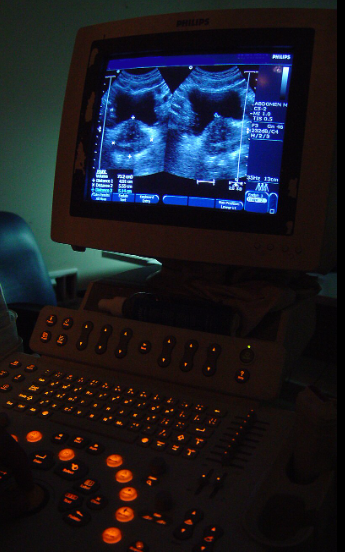

0. medical engineering
의용공학과는 전자기술을 이용한 첨단 의료장비의 개발 및 생산, 임상 장비의 운용, 의료기기의 정보처리,
의료장비의 전문적인 취급 분야에 진출할 수 있는 전문가 양성에 교육목표를 두고 있습니다.
의용공학은 광역 진로 시스템, 인공 장기 분야 등에 대한 연구를 가능하게 하며, 질병의 정확한 진단과 치료에 도움을 주기 위한 학문입니다.
의용공학은 국민의 의료복지향상을 위해 의학과 공학의 전문기술이 복합된 첨단기술 집약형으로 부가가치가 매우 높은 분야입니다.
의용공학은 정보화 시대의 도래와 함께 개인의 행복, 복지, 건강을 추구하는 사람들의 욕구가 증대됨에 따라 더욱 주목 받고 있습니다.
의료 및 보건 분야, 공학, 생물학 물리학 등 자연과학에 관심이 있는 학생에게 적합합니다.
기계나 장비 등을 다루거나 정교한 것을 만들고 실험하며 조작하는 능력을 가지고 있는 사람이면 좋습니다.
